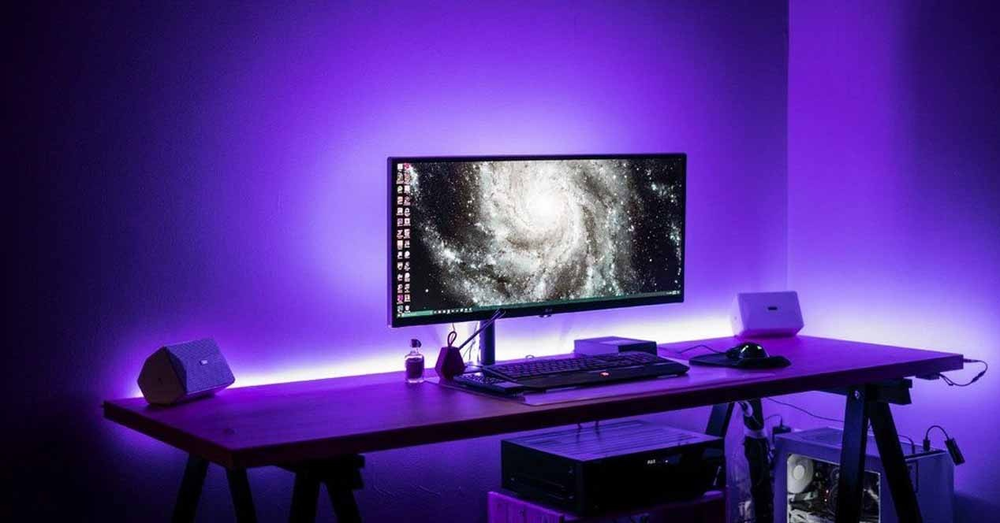
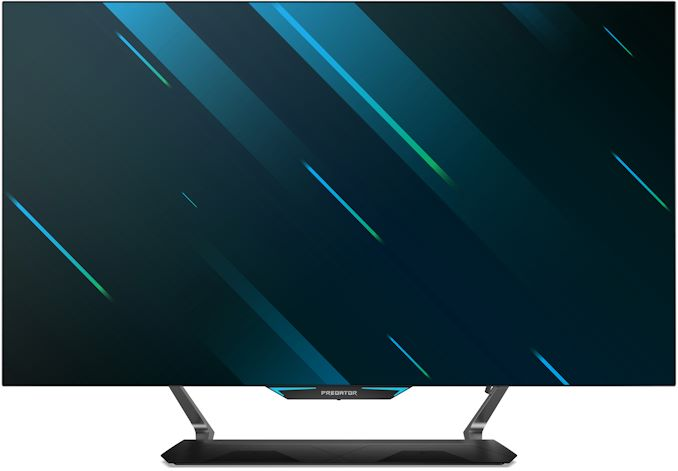
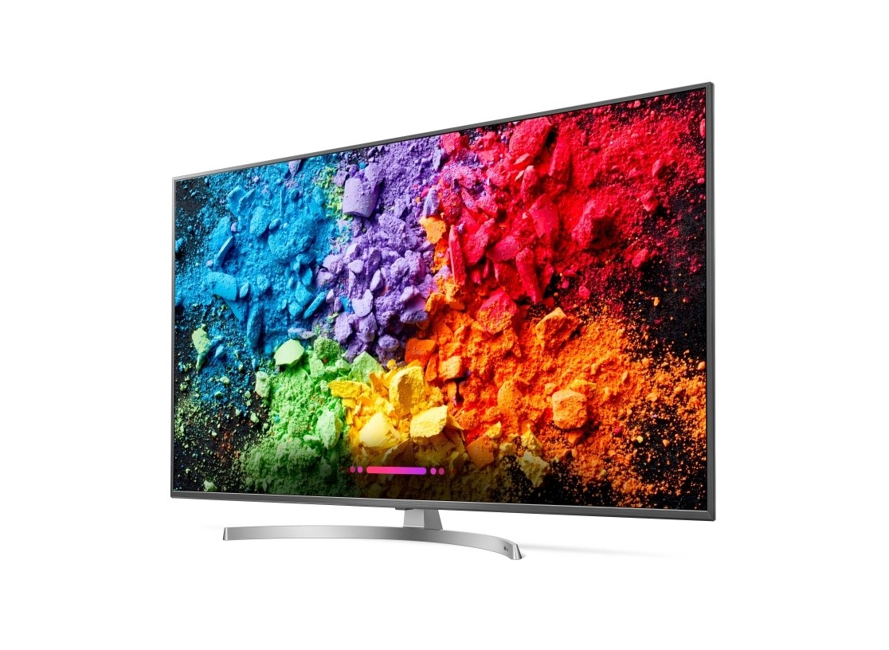

MONITOR LED
La tecnología LED, o Light Emitting Diode, es usada en pantallas LCD, o Liquid Crystal Diode, como retroiluminación proporcionando cualidades tales como una larga esperanza de vida, amplia gama de colores, respuesta rápida, menos dañino con el medio ambiente.
Matriz Completa
Monitor en el que se usan luces LED detrás del monitor LCD, aumentando tu campo de visión, y consiguiendo una menor fatiga para el ojo
Monitor OLED
Estos monitores usan diodos emisores de luz orgánica, permitiendo aumentar el brillo o disminuir cada píxel del monitor, mejorando así los niveles de negro, colores más nítidos y mejor contraste.
Monitor EDGELED
Estos monitores LED usan bombillas en el borde inferior de la pantalla, consiguiendo unos negros profundos pero con el inconveniente de que resulta complicado iluminar zonas concretas de la pantalla
El principal funcionamiento de los monitores LED se basa en el cristal líquido, la cual se encuentra en la pantalla, en la que también se encuentran los transistores y las capas de filtro.
Los monitores LED funcionan de manera que los propios LEDs son los que conforman el píxel de la imagen, componiendo la imagen punto a punto por las corrientes eléctricas; estas corrientes eléctricas están en un circuito eléctrico, permitiendo controlar la polarización del cristal líquido.
Primero hay que posicionar los armazones uno al lado de otro, uniendo los armazones horizontales con los verticales.
En cuanto al cableado, empezamos desde el armazón inferior izquierdo, conectando el sistema reproductor con el puerto DATA IN. Luego conectamos el puerto DATA OUT al puerto DATA IN en el armazón superior, completando así la primera columna, de dicho armazón superior conectamos el armazón de al lado, y así seguimos en orden descendente.
Por último conectamos desde la fuente de alimentación hasta el puerto POWER IN, el cual está en el primer armazón, y conectamos el puerto POWER OUT a el puerto POWER IN.

¡Sigueme en mis redes sociales!

noel.0z

GymleyZ